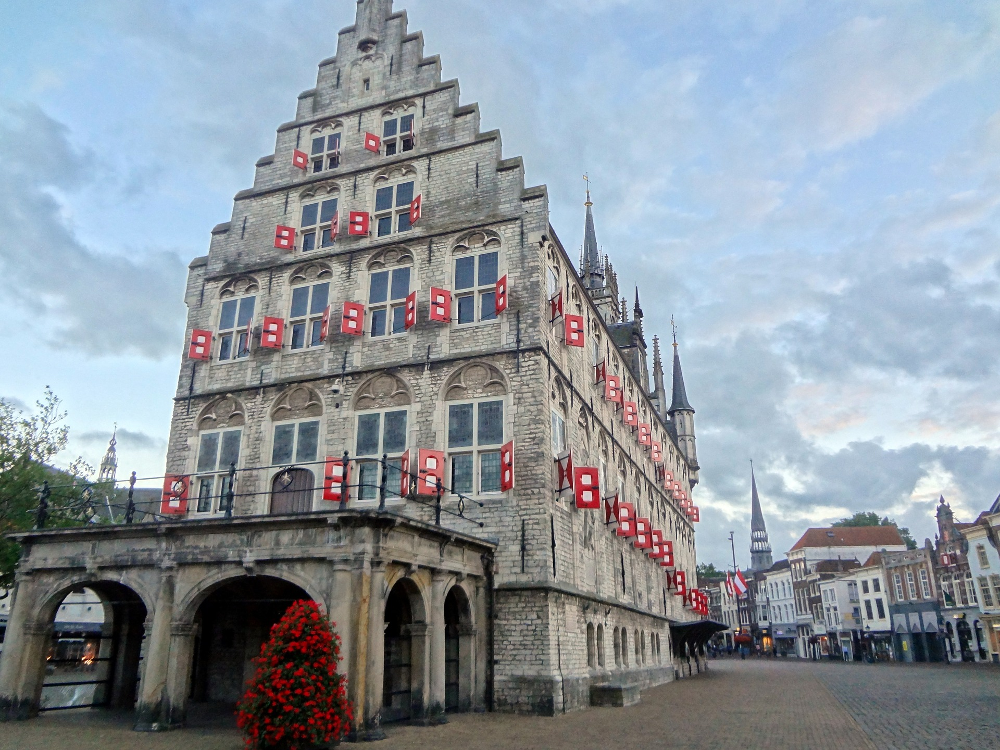

Vijf Feitjes
- Herkomst van de naam: Gouda, de beroemde kaas, is vernoemd naar de Nederlandse stad Gouda. Hoewel het oorspronkelijk niet exclusief daar werd geproduceerd, werd de kaas in de loop der tijd sterk geassocieerd met de stad.
- Goudse kaasmarkt: Gouda staat bekend om zijn traditionele kaasmarkt, die al meer dan vier eeuwen bestaat. Toeristen kunnen hier nog steeds een levendige kaasmarkt ervaren, compleet met kaasdragers in traditionele klederdracht.
- Goudse stroopwafels: Naast kaas is Gouda ook bekend om zijn heerlijke stroopwafels. Deze zoete lekkernij bestaat uit twee dunne wafels met een stroopvulling ertussen en is een populaire snack, niet alleen in Nederland maar ook wereldwijd.
- Gouda in de kunst: Gouda-kaas heeft zijn weg gevonden naar de kunstwereld. Schilderijen uit de Gouden Eeuw van Nederland, zoals die van de Nederlandse meesters, bevatten vaak afbeeldingen van kaas, waaronder Gouda-kaas, als een symbool van welvaart en overvloed.
- Stadhuis van Gouda: Het stadhuis van Gouda is een architectonisch juweeltje. Het dateert uit de 15e eeuw en staat bekend om zijn gotische architectuur en prachtige glas-in-loodramen.
Sint-Janskerk
DE LANGSTE KERK VAN NEDERLAND De grote brand van 1552 verwoest een groot deel van de middeleeuwse Sint Jan. Kort na de ramp geven de bestuurders opdracht voor de bouw van de meest opzienbarende kerk van Holland. Met 123 meter is het ook nog de langste kerk van Nederland DE 72 GOUDSE GLAZEN ZIJN WERELDBEROEMD Wie de Sint Jan inloopt valt stil bij het zien van de majestueuze ruimte met de 72 wereldberoemde gebrandschilderde ramen. Die beleving wordt alleen maar sterker, wanneer je het wonderlijke licht door de ‘Hollandse Meesters’ ziet binnenvallen. Het is het begin van een indrukwekkende ontdekkingstocht langs bijbelse en historische taferelen vol menselijke emoties.

Stadhuis Gouda (City Hall)
In de zomer van 1438 zorgde een grote stadsbrand ervoor dat het stadhuis zwaar beschadigd raakte. Het stadsbestuur besloot dat het nieuwe stadhuis vrij moest staan en koos als nieuwe locatie het marktveld, toen nog een drassig veenterrein. Aan de rechterzijgevel zie je het klokkenspel met de mechanische poppen, aangebracht in 1961. De hoofdrolspeler in het poppenspel is Floris V, die Gouda in 1272 stadsrechten verleende. Elke twee minuten over het halve en het hele uur word je getrakteerd op een fraai schouwspel.
